Item text on this page is copied from the mod as it appears in game: the name, the power line in red, and the description in grey. Icons are the mod's own textures. Every recipe unlocks in the recipe book as soon as you pick up what it's made from.
Gear for every chapter
Since 1.60.0 each chapter has its own armour set, two weapons and four tools. They have a page of their own, with every recipe. So do the Dead Water's two dive suits and Chapter Ten's Blackout gear.
The Relay Core
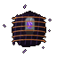
Relay Core
Tunes you in to them
What the relay's signal ran through.
Hold it to your ear: for thirty seconds every one of
the parasite's own shows through anything, a long way off.
From: the Amalgam at Relay 6, when it dies. Chapter: five.
Use: hold it to your ear and you're Tuned In for thirty seconds ("You tune in. Under the static, there they are."): every one of the parasite's own within 96 blocks shows through anything, violet. Then it needs a minute and a half to warm up again.
Why you need it: Tuned In, you can hurt the Afterimages at the Starlite Drive-In ("tuned in, they're as real as you are"), and it has to be on you to tune the projector for the last reel. First use earns Tuned In.
Related block: the Tether, the knot of sinew lashed to each of Relay 6's platforms, its veins lit.

Tether
Break the one on each platform to cut the Amalgam off from the relay.
Compasses and needles
Civil Defence Compass
Civil Defence Compass
Its needle is set on Rosemont
Shelter No. 4. Left on the dais in Bunker B.
If the shelter falls, make for the city.
From: the locker the Watcher leaves on the dais in Bunker B after you kill the Warden of Shelter No. 4, with bread, torches and a golden apple. Points: at Rosemont, wherever you are. Added in 1.39.1.
The Watcher's Needles
From the Uplink Station on, whenever a new place wakes, the Watcher hands every player a needle: a compass that only ever points there. Its name is in dark purple and it never glints.
| Needle | Its line | Given when |
|---|---|---|
| Watcher's Needle (Uplink Station) | Where they talked to the gun. The array is there. | The Bloom changes |
| Watcher's Needle (Capacitor Works) | Still holding its charge. The cell is there. | The Bloom changes |
| Watcher's Needle (Soul Well) | Where they put the souls. The strongest is at the bottom. | The Bloom changes |
| Watcher's Needle (Ashford Nuclear Plant) | Its reactor never went cold. The core is in its heart. | The Orbital Railgun is built |
| Watcher's Needle (Meridian Laboratory) | Where they built what tears a charge loose. The destabilizer is there. | The Orbital Railgun is built |
| Watcher's Needle (Blackwater Station) | Out in the sea. Something got loose in it. The blood is there. | The Orbital Railgun is built (with an oak boat) |
| Watcher's Needle (Relay 6) | Where their static goes out from. Something holds on to the mast. | The Bloom is dead |
| Watcher's Needle (the Starlite) | Where the last of their static runs down to. A screen showing nothing. | Relay 6 is off the air |
| Watcher's Needle (The Hive) | Where it's growing itself a mind. The Chorus is down in the pit. | After the hive speaks (or when you walk into the hive first) |
| Watcher's Needle (The Sinkhole) | Where the ground was pulled down from underneath. It went down there. | Never handed out in 1.63.3: it exists only as a name. The Chorus Fragment is what leads you to the sinkhole. |
Every needle's power line reads "Points to one of the places that woke".
The Altar, Cathedral, Mansion and Gardens Needles
Since 1.63.2, compasses you can make for the places you go back to (the Cathedral Needle since 1.72.3). Use one and its needle swings round and settles on the nearest of its place ("The needle settles on the Forsaken Altar - 412 blocks north-east", for example); after that it points there wherever you go in the Overworld, until you use it again. With none anywhere near: "The needle spins and spins. There's none anywhere near." Anywhere but the Overworld: "The needle won't settle. What it's looking for is up in the Overworld." Their shared power line: Use it: it finds the nearest one, and points there. Since 1.63.4 they find their place from anywhere: where it stands, or where it will rise the first time you come near.
You start with three. Since 1.72.3 the Altar Needle, the Cathedral Needle and the Gardens Needle go into your inventory the first time you join a world. A world you've already played gives them to you the next time you join, once only. The Mansion Needle you still make.
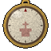
Altar Needle
Use it: it finds the nearest one, and points there
For the altars the old things were given to.
Recipe: a compass, a candle and a bone. Finds the nearest Forsaken Altar.
Cathedral Needle
Use it: it finds the nearest one, and points there
Recipe: a compass, a purple stained glass pane and a candle. Finds the Cathedral of the Hollow. A brass case like the others, with a violet ring and a faint cathedral on its face. New in 1.72.3.
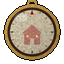
Mansion Needle
Use it: it finds the nearest one, and points there
For the house where it all went wrong.
Recipe: a compass, an iron sword and redstone. Finds the nearest Murder Mansion.
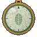
Gardens Needle
Use it: it finds the nearest one, and points there
For the glasshouses, and what grew in them.
Recipe: a compass, a glass pane and any small flower. Finds the nearest Botanic Gardens.
The README calls these the Forsaken Altar, Murder Mansion and Botanic Gardens Compasses; in game they're named as above. The Chorus Fragment works like a needle too: see below. And in the Dead Water, the Watcher's Chart is a map.
The power source parts
When the Bloom changes, the Watcher tells you there's a gun above the sky that needs a power source, and three places wake. A tracker along the top of your screen counts THE POWER SOURCE (0/3).
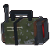
Targeting Array
SENTINEL's lock
Pulled out of the dish when the city fell.
It tells the gun where to look.
Where: the Uplink Station, in the locker in the control bunker by the consoles, with Lt. Okafor's duty log, bread, iron and two flashbangs. Infected operators, a sniper and a breacher hold the compound.

Capacitor Cell
Works cell 9, fully charged
Nobody came to collect it.
It holds what the gun needs to fire.
Where: the Capacitor Works, in the test cage at the back, past arcs jumping between the lightning rods. See the live banks.
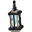
Bound Soul
The strongest soul in the well
Its keepers knelt by it for years.
It will hold the Watcher's darkness.
Where: the bottom of the Soul Well, thirty blocks down, on the altar where its keepers kneel (they get up when you come close; two of the Interred wait too). With bones, candles and echo shards.

Orbital Core
SENTINEL's power source
The array, the cell and the soul, made one.
Set it on a Forsaken Altar.
Recipe: the Targeting Array, the Capacitor Cell and the Bound Soul, with iron and redstone. Set it on a Forsaken Altar and the Watcher comes and pours itself into it ("that's me. all of me that's left.").

Infused Orbital Core
The Watcher is in it
It drinks the light round it.
Build the gun round it.

Orbital Railgun
Hold to lock on, release to fire (12s recharge)
It doesn't shoot. It tells SENTINEL where.
16 to 200 blocks, open sky only.
The only thing that can hurt the changed Bloom.
Recipe: the Infused Orbital Core, iron blocks, a copper block, lightning rods, iron and a spyglass.
Use: hold use and aim at the ground 16 to 200 blocks off, in the Overworld ("No uplink. There's no sky here for it to talk to." anywhere else). Its laser paints the spot, a ring locks on, the capacitors whine up for two and a half seconds: LOCKED - RELEASE TO FIRE. Let go and the slug comes out of the sky: sixty damage, fire and a shockwave out to twelve blocks.
The Ray Gun and the Omni
Building the Orbital Railgun wakes three more places. A tracker counts THE RAY GUN (0/3).

Nuclear Reactor Core
Out of Ashford's reactor
A fuel assembly. Its rods still glow.
One of the three things the Ray Gun's made of.
Where: Ashford Nuclear Plant, in the fuel pool. Don't go in the water without a suit; the decon lockers have one.

Discharge Destabilizer
Out of the Meridian lab
It can't hold what's in it for long.
One of the three things the Ray Gun's made of.
Where: Meridian Laboratory, in the glass cell in the middle of the ring ("mind the coils"), with redstone and amethyst.

Vial of Dark Matter Blood
Out of Blackwater's sample freezer
It isn't a liquid. There are stars in it.
One of the three things the Ray Gun's made of.
Where: Blackwater Station, out at sea, in the freezer at the back. Parasites.
Ray Gun
Hold to aim, attack or let go to fire (2 min recharge)
The Orbital Railgun, rebuilt round what the Bloom brought.
24 blocks across, the whole height of the world.
The Watcher wants it.
Recipe: the Orbital Railgun and the three parts, or bring them all to a Forsaken Altar. After the Omni is taken back, the Watcher burns this recipe out of every book.
The Watcher turns the Ray Gun into the Omni Orbital Railgun.
The reactor's parts and the Rosemont Device
Each part is the only one there is: lose it and it goes back where you found it. The Rear and Front Assemblies won't go into anything but the Assembly Cradle; the Rear Assembly comes back a minute after it's lost (burnt, dropped in the void, left on the ground, shut away), and any copy crumbles in your hands. A tracker counts Reactor parts 0/3.
| Item | Its text | From |
|---|---|---|
| Rear Assembly | One of the reactor's three parts. Off the army's truck in Rosemont's plaza. Heavy: it slows you. | The Military Cradle in Rosemont (three axe blows) |
| Reactor Core | Lifted out of its rack at the bottom of the reactor pool. Hot. Everything infected wants it. | The Laboratory's reactor hall (wakes Specimen Zero) |
| Front Assembly | Out of Bunker B, under Shelter No. 4. Bulky: you can't sprint with it. | The dais in Bunker B (wakes the Warden) |
| Assembly Cradle | Holds the reactor's three parts. Set it down somewhere safe. The Rear Assembly goes in first, then the Core, then the Front. | Comes with the Front Assembly |
| The Rosemont Device | There is only one. While you carry it, the Flesh lets you pass. The Bloom does not. | Hold use on the full cradle for five seconds, or let the Watcher build it at a Forsaken Altar |
The parasite egg

Parasite Pod
The parasites' eggs. Their pods come up out of their black Xeno Resin and split open when you come near ("Pod splits open"); you'll hear them throb. Since 1.47.1 a pod is a round egg-sac, and split open it's a torn cup with its four flaps peeled back off the rim and the slime inside. Found at Blackwater Station and Relay 6.
There is also a Parasite Spawn Egg (and a Parasite Host Spawn Egg) in the creative tab.
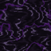
Xeno Resin
The parasites' black resin, creeping over everything where they nest. Static Hounds sometimes drop it.
Chapter five
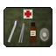
Surgical Kit
Cuts a parasite's brood out
Hold it to cut one out of yourself.
Use it on someone else to cut one out of them.
It hurts. You bleed. Four uses.
Recipe: shears, an iron ingot, string, paper and wool. Also in the Relay 6 operator's locker and sometimes in the Null ruins. Earns Cut It Out.
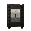
Frame of the Last Reel
What's left of an Afterimage
A frame of film, torn off at both ends.
In it, very small, someone standing in a field.
Feed four to the Starlite's projector.
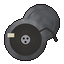
The Last Reel
Where they come from
The reel off the Starlite's projector, seen through.
A dented can with no label. The film inside is warm.
Keep it.
Held up to the light: "something vast, curled under the ground. An eye, opening." Hold it over the tear at the drive-in to open the way to the Null Static Zone.
Carrier Thread
What it carried them on
Pale, cold, and stronger than it looks.
There's a vein of light down the middle of it.
It isn't carrying anything now.
6 to 10 from the Carrier.
Music Disc
Static Hollow - Signing Off
Dropped by the Carrier.
Chapter five: the hive and the Deep
Parts five and six of Chapter Five: the Hive, where the Chorus grows itself a mind, and the Deep, where it goes to ground.
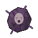
Chorus Fragment
Hold it to your ear: it whispers
A piece the Chorus left behind as it went down. It's still part of it, wherever it is.
From: the floor of the Chorus's pit when it runs, one for everyone. A knot of grey-violet flesh with a face in it the size of a thumbnail, its eyes shut, its mouth moving.
Use: hold it to your ear (every four seconds) and turn round. Facing the way the rest of it went, it whispers clear, and what it says tells you how far: "down. a long way down. far from here - that way.", "that way. under the hills. we can feel you coming.", "closer. we can hear you walking. we can hear your heart.", "here. right under you. come down. it's warm." Side on it's faint and broken ("...colder... no... turn..."); facing away, only static. Up top it leads you to the sinkhole (Warmer); down in the Deep it leads you to where the Chorus has gone to ground ("here. we are right here. we are finished growing."). With nothing to point at, it only mutters, things like "we remember the dark under the hills." and "every one we take remembers. every one remembers you."
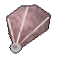
Listener's Ear
One of the Deep's older ones'
A fan of thin skin on rods of bone. It heard everything.
Stitched over boots, it makes your steps nothing.
From: Listeners, in the Deep. Also goes into the Usher's Shoes (see the chapter gear).
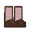
Hushed Boots
Your steps make no sound
Walk as quiet as sneaking: the Listener can't hear you,
and the Deaf King has to be close to feel you.
Recipe: leather boots, two Listener's Ears and string, in any order. Earns Not a Sound.
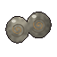
The King's Ear-Stones
So he wouldn't hear it singing
Two plugs of the old ones' stone, warm, a spiral in each.
Carry them and the Chorus's song
can't get into you either.
From: the Deaf King, when he dies and his crown cracks off. Anywhere in your inventory, they keep the song of the Chorus, whole, out of you in the last fight. Hold them to your ears and the world goes quiet a moment.
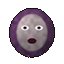
The Last Voice
The one voice it couldn't swallow
A face cut out of the Chorus, its eyes open now.
It isn't singing. It's trying to tell you something:
a door at the end of the world, and the seal on it.
From: the Chorus, whole, when it dies in the Warm Heart (The Last Voice). Hold it to your ear and it talks: "...there's a door. at the end. he sealed it...", "...take me to the end of the world. i'll open it for you...", "...the one in the black coat knows. ask him what he locked up...".
Why you need it: carry it into the End and it breaks the Watcher's seal, however you came by it (since 1.60.1): the End is open again, and the Door at the End of the World comes down. That starts Chapter Six.
Blocks
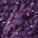
Hive Flesh
The parasite's violet flesh, veined, that the hive is grown of; it lines the Burrow and the Warm Heart too. The Hive Hands drop it and Hive Chitin when they die.

Hive Chitin
Its black braided spires and the ribs arching over the pit.
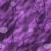
Nerve Node
The glowing bulbs on top of the four stalks round the pit, glowing and pulsing, cords of light running from them to the Chorus. Tear one open and it screams; tear all four for Senseless.
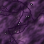
Biomass
The heap of violet flesh one of the turned leaves where it died (since 1.49.0), veined and pulsing, chitin forced out through it. It drags at you as you wade through it, and a minute or two later it heaves itself up into one of the parasite's pure forms, leaving its torn husk. Burn it and nothing gets up. See the turned.
In the Deep: The Throat (a ring of the hive's flesh, puckered shut: stand on it and it opens and takes you down, or back up), Deep Rock, Old Stone, Old Stone Bricks and Carved Old Stone (the pale worked stone of whoever was down there first), Bloom Root and Root Tendril (the Bloom's roots, gone deeper than anyone ever dug; the tendrils' ends glow) and Ember Cap (it glows like a coal on the cavern floors).

Carved Old Stone
The Deaf King drops three to six when he dies, with Bloom Root and diamonds.
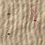
Bloom Root
Great roots hanging down through the roofs of the Root Hollows.
Chapter six: the Door at the End of the World
The Stalls, the Watcher's Vault and the Other Side. See Chapter Six.
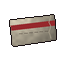
Ticket Stub
ADMIT ONE
Soft old card, a seat number you can't read.
Show one to an Usher and it looks away a while.
From: some of the Audience, the Ushers, and the Crowd. Use: on an Usher: "The Usher tears your ticket in two, and looks away." For a minute its lamp doesn't see you. Also goes into Chapter Six's gear.
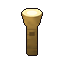
Usher's Lamp
Held, it lights the dark round you
Use it to flash: the Audience and the Ushers
caught in it reel, hands over their faces -
and the Crowd's Hush breaks. It needs a while to warm again.
From: an Usher, now and then. A brass torch-lamp, its glass yellowed, still warm. The flash takes eight seconds to warm again. Flash it at one of the Tuned in the Vault and its screen whites out: it can't move for four seconds, watched or not.
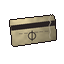
The Last Ticket
ADMIT ONE - THE VAULT
What was left in the middle of the Crowd.
It's warm. On the back, in a thin black hand: THE VAULT.
Hold it up to the seam in the screen.
From: the Crowd, one for everyone who was there. Held up to the seam the Watcher leaves in the Great Screen in Front Row, it tears in two in your hand and the seam opens for good (Admit One); after that, "The seam's open. Walk into it." Used anywhere else: "ADMIT ONE. On the back, in a thin black hand: THE VAULT."
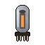
Vacuum Tube
Still warm
Out of one of the Tuned's sets. It glows a little, faintly orange.
Two of them, with glass and iron, make a set of your own.
From: some of the Tuned, and the Projectionist; since 1.63.16 the Carrier Wave's valve bulbs and Handsets, and its dead drops. Makes: two Old Sets (I G I / T R T / I I I: I iron ingot, G glass pane, T Vacuum Tube, R redstone), old televisions that hum, with static crawling on them; use one to switch it on or off. Also goes into the Tuning Fork, the Relay Staff and the Receiver. An Old Set that's on is where the HELP WANTED flyer turns up.
What he kept
The three things in the Watcher's keeps, each on a plinth behind a round steel door. Bring all three to the Watch and the Projectionist steps down out of the sets (What He Kept). All three say KEPT FOR THE FUTURE and "Take it to him, in the Watch."
The Omni's Heart
KEPT FOR THE FUTURE
What made the Omni more than a gun: every colour at once,
turning, in a cage of its own light. He took it out of it.
Take it to him, in the Watch.
Later he loads it into his last projector against the Viewer (Every Colour at Once). See the Omni.
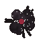
What's Left of the Carrier
KEPT FOR THE FUTURE
A knot of it, still beating. Static comes off it like heat.
It carried whatever was put on it. It held a door open.
Take it to him, in the Watch.
Take it and its static pours out: every Tuned near you is loose for a few seconds. See the Carrier.
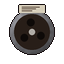
His First Reel
KEPT FOR THE FUTURE
A film can, dented, the reel in it. On the lid, in his hand:
THE OTHER SIDE. FIRST. DO NOT RUN.
Take it to him, in the Watch.
Kept in a glass case. He runs it after the Projectionist burns through.
The Projectionist's Lens
Held: you see what's watching you
All that was left of it, in the ash: its lens, still warm.
Hold it and everything hostile near you shows through the walls,
outlined in its light.
From: the Projectionist, with three to five diamonds, two to four echo shards and two to four Vacuum Tubes.
Music Disc
Static Hollow - Thank You for Watching
Given to you after the last show, when the credits have rolled and you're sent home. See the soundtrack.
Blocks
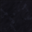
Seal-Stone
Black, his glyphs cut in it (Seal-Stone Glyph), a few still faintly lit: the causeway out to the Door, and the Door's frame. In it hums The Door's Static.
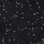
Stalls Asphalt
The Stalls' ground, under the Picture House Seats. Facing them, The Great Screen of Screen Cloth.
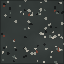
Vault Terrazzo
The dark, flecked floor of the Watcher's archive. Its keeps are The Watcher's Concrete (it doesn't break). Also: Archive Shelves (steel, cans of film and boxes of tape, labels in his hand), Old Sets, Cable, the keeps' Keep Door and Keep Wheel (use it: five seconds of the bolts drawing back, and the door swings in), What He Kept (the plinths) and The Watch Wall.

Stage Boards
The Other Side: Stage Boards, Stage Flats and Painted Flats (each a picture of somewhere from the story), Footlights, The Screen's Back, His Last Projector and the Black Static the Door goes to.
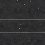
Black Static
What fills the Door at the End of the World once the first reel has been run: the dark on the far side of it, looking out.
Chapter seven: the First Signal
The Remote
An old television's remote, heavy, its buttons worn smooth, the one with nothing on it warm. The Watcher gives it to you after the Hub, and it earns Channel Changer. Press it: you're in the Hub. Press it in the Hub: home. Before it has anywhere to go: "You press the blank button. Nothing. Not yet."
In 1.59 he handed it over when you landed at home ("take this. if you need to go back - it's still there."). Since 1.62.0 the fall from the Hub goes to the Dead Water instead: he hands it over on the rig ("take this. it'll get you back - to the hub, and home.") and it cracks in your hand. See the Broken Remote. Mended, it does one more thing: "Press it: the Hub (and in the Hub, home). Crouch and press it: back to the rig." In Chapter Nine it becomes the Remote (Mutated).

Hub Stone
The pale stone of the Hub's floating plaza, with Hub Stone Slabs.

Hub Glyph
His marks, lit in the Hub's floor. Along its north side stand six Replay Portals, one for each chapter, each playing its chapter on an old set.
The Rerun Reels that replays leave behind are on Gear for every chapter.
Chapter eight: the Dead Water
The rig's stores are full of these. See Chapter Eight and the Dead Water.
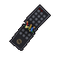
The Broken Remote
Dead - it broke in your hand in the Dead Water
Its case cracked across, its wires out, the warm button cold.
Mend it: this, a Static Leviathan's Signal Organ, a copper ingot.
(The big ones live deep. They sing on its frequency.)
Pressed: "It sparks. The warm button's cold. Nothing." Mend it: the Broken Remote, a Signal Organ and a copper ingot, in any order, give you back the Remote ("The Remote works again.").

Harpoon Gun
Hold to pump, let go to fire - in water or out
Reels what it bites back to you - or you to it, if it's too big.
Strike a wall or the sea floor and it hauls you there. Crouch to let go.
Fire again while it's out to reel it in. Takes Harpoon Bolts.
Recipe: I I P / S C I / W . . (I iron ingot, P piston, S string, C copper ingot, W any planks). Also in the rig's armoury and its dive locker.
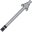
Harpoon Bolt
The Harpoon Gun's ammunition
Barbed steel, an eye for the cable. It comes back with the harpoon -
unless it snaps off in what it struck.
Recipe: . T . / . I . / . N . (T Needle Tooth, I iron ingot, N iron nugget) makes two. Also in the rig's armoury and dive locker.
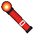
Marine Flare
Burns red for a minute - even underwater
Strike it and throw it. In the sea it sinks slowly,
lighting the dark on its way down.
Recipe: gunpowder, redstone, paper and red dye, in any order, make three. All over the rig's stores.
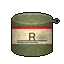
Rig Ration
A meal in a tin
Stamped R. The rig's larders are full of them.
Someone stocked this place a long time ago.
Recipe: dried kelp, bread, cooked cod and an iron nugget make two. In the mess, the food stores and the bunks.
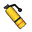
Air Tank
Underwater: use it to breathe - your air back to full
A diver's bottle off the rig's dive locker.
Good for a dozen breaths.
Recipe: . G . / I K I / I S I (G gold ingot, I iron ingot, K dried kelp block, S string). In the dive locker, the sub bay, sunken lifeboats and the flooded habitat dome. It can't be filled again.
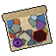
The Watcher's Chart
The Dead Water, every one of its waters
Use it to unroll it. The black hatched in red
is the dead zone. Don't take the sub over it.
The Watcher hands it to you when you come down to the Dead Water (since 1.63.2): four thousand blocks of sea round the rig, every water in its own colour and named, the floor's depths shaded and contoured, and the Black Below hatched out in red. Held, it's a map of the stretch you're in (a thousand blocks a square), with you as an arrow, the others with you, and the rig. Use it to unroll the whole chart: scroll to zoom, drag to look round, R to come back to you; point at a water for his notes on it (all of them are on Notes and books). A Map, a Glow Ink Sac and a Prismarine Shard make another.
Pressure Plating
Submarine Hull Plating
Fit it in ORPHEUS's upgrade bay (or crouch and use it on her): plated, she can go as deep as the sea goes
Recipe: B T B / H O H / B T B (B iron block, T Needle Tooth, H Shroud Hide, O obsidian). Also found in Sink Station and the wreck field. Plated, she has no crush depth at all ("plated - no crush depth"). Since 1.63.8 it's one of the modules in her upgrade bay (a sub plated before then has its plating in the bay). With nothing fitted she's rated to 183 m.
ORPHEUS's upgrade bay
Since 1.63.8: use ORPHEUS's motor (aft, in the engine room) and her upgrade bay opens, five mounts for modules to fit, swap and take out as you like. What's in it is what she has, and the motor tells you her rating. Crouching and using a module on her still works: it goes into the bay. Once all three are in it (the Pressure Plating, the Depth Module and the UV Field Module), Chapter Nine begins.
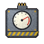
Depth Module (280 m)
Submarine Upgrade
Fit it in ORPHEUS's upgrade bay (the motor, aft): she's rated to 280 m
Recipe: I C I / G R G / I C I (I iron block, C copper block, G tinted glass, R block of redstone). There's one in the parts crate on the catwalk of the rig's sub bay (a rig that was already up gets the crate too). Fitted, she's rated to 280 m, against 183 m with nothing.
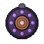
UV Field Module
Submarine Upgrade
Fit it in ORPHEUS's upgrade bay: a ring of UV lamps round her hull keeps Enzyme 1-2418 off her
Recipe: E C E / G R G / E C E (E UV Emitter, C copper block, G glowstone, R block of redstone). Fitted, her floodlights burn violet: the Enzyme stays off her in the Haemal Reach and is burnt out of her crew, and if she's already going to flesh it burns it off her (her tentacles let go of whoever they're holding).
The Static Heart
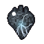
The Static Heart
From the Canticle's Anchor
Warm, and beating - to no rhythm of its own. There's a picture in it, of nothing, always moving
Keep it. Something is going to be made with it
From: the chest in the hollow of the Canticle's anchor's crown, a hundred blocks of anchor on the floor of the void (go in on its west side). Added in 1.63.8.
Enzyme 1-2418 and the UV kit
Since 1.63.9 the Haemal Reach's water is full of Enzyme 1-2418, and without the right dress it gets into you (see the Dead Water). Milk doesn't touch it. This is what gets it out again. The suit that keeps it out, the UV Dive Suit, is on Gear for every chapter.
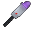
UV Lamp
Burns It Out
Held, it lights the dark - and the Stretched won't come into its light.
Use it to flash it: a fifth of the Enzyme burnt out of you, the
Stretched near you scorched and driven off; in ORPHEUS, flesh off her walls
Recipe: . I E / I R I / K I . (E UV Emitter, I iron ingot, R redstone, K dried kelp). Also in the lockers at the Haemal Research Station, with the UV Dive Suit. After a flash it needs ten seconds to charge.
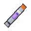
Enzyme Inhibitor
1-2418 / One Dose
The lab's auto-injector. Into your thigh: half of the Enzyme in you
gone, and for thirty seconds none of it takes. Even when the Heart
has you, it can still get you loose
From: the Haemal Research Station: two or three in the office, with its log, and more in its other chests and lockers. The Stretched drop them too.
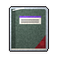
Research Log, HRS-3
Project 1-2418
Haemal Research Station's last log book, in its sealed sleeve.
Use it to read it, an entry at a time
From: the office chest at the Haemal Research Station. Use it and it reads you one entry at a time, in order, then round again. All nine entries are on Notes and books.
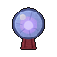
Photophore
Light Organ
Out of a Lanternlet. Its core still burns, blue-violet,
and it doesn't stop when you cut it out. (UV.)
From: Lanternlets; the lab's chests. The Ember Crew buy them. Goes into UV Emitters.
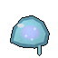
Glow Gel
Luminous Jelly
A Thimble Jelly's light, scraped out of it: a glob that glows
on its own. Put it round a filament and it carries the UV
From: Thimble Jellies, the Stretched; the lab's chests. Goes into UV Emitters.
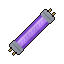
UV Emitter
Ultraviolet
A tube of violet glass, burning. Enzyme 1-2418 can't stand it:
it's what a UV Lamp and ORPHEUS's UV Field are made of
Recipe: C G C / P B P / C A C (C copper ingot, G Glow Gel, P Photophore, B Lantern Bulb, A amethyst shard) makes two. Also in the lab's chests and lockers.
The Ember Crew's trade
Since 1.63.10 the crew of the Ember Pumping Station trade: right-click one of them (crouch to just talk). They sell these four (and ancient debris, now and then) for iron, copper and gold, and buy Needle Teeth, Shroud Hide, Photophores and Signal Organs. They restock every half day. All four go into the Ember Deep Suit. Ember Plating is in the station's own chests too.
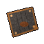
Ember Plating
Deep Suit Part
Scorched alloy, cast at the Ember Pumping Station from what comes
through the portal. The Ember Crew trade it for iron
Goes into all four pieces of the suit.
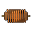
Heat Coil
Deep Suit Part
Copper wound round a core that never cools. It keeps a
deep suit warm at the bottom of the void. (Traded for copper)
Goes into the helmet, the hull and the legs.
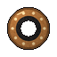
Pressure Seal
Deep Suit Part
A bronze ring and its gasket: what keeps the sea out of a joint
at any depth there is. (Traded for gold)
Goes into all four pieces of the suit.
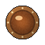
Vent Glass
Deep Suit Part
A port glass a hand thick, smoked orange. The Ember Crew pour it
over the vents (traded for copper and needle teeth)
Goes into the helmet.
The Drowned Mycelia
What its growth makes (since 1.63.13). A drowned diver's barrel in a Gillmaws' nest, in the caves under its floor, holds his teeth, his tonic, his bolts and his flares, and now and then his spear.
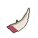
Gillmaw Tooth
Still sharp
Out of a Gillmaw's cap, where the gills should be.
It's warm. Spear tips, and nothing better.
From: Gillmaws; the divers' barrels.
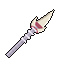
Gillmaw-Tooth Spear
Catches and holds
A spear tipped with a Gillmaw's teeth, lashed with hyphae.
What it hits is slowed - the more so in the water.
Recipe: . . T / . S . / S . . (T Gillmaw Tooth, S stick), like any spear: it lunges and charges like the others.
Drifter Jelly
Tastes of the dark
Out of a Spore Drifter's bell. For a while after, you see in the
dark under the water, and breathe longer. It's full of spores
From: Spore Drifters; the divers' barrels.
Spore Pouch
Throw it
A drifter's bladder stuffed with spores. Bursts in a cloud four
blocks round: the dark, the sickness - and hunters lose you. Sea things
scatter; a Gillmaw clamps shut. Don't stand in it yourself
Recipe: Drifter Jelly, string and a brown mushroom make two.
Spore Tonic
Burns going down
Charcoal, brine salt and kelp, steeped black. The divers' own
cure: most of the spores burnt out of you, and for a minute none
of them take. The caps on you wither
Recipe: a glass bottle, charcoal, sugar and dried kelp. It burns sixty of the spores out of you, and for a minute none of them take. Milk does nothing.
Lantern-Cap Lamp
Recipe: . H . / G L G / N G N (H Hanging Hyphae, G glass pane, L Lantern Caps, N iron nugget). A jar of lantern caps, still alive, still lit: as bright as a lantern, and it doesn't go out under the sea. It stands or hangs.
Hyphae Rope Ladder
Recipe: H . H / H H H / H . H (H Hanging Hyphae) makes four. It goes on a wall like a ladder, or hangs free from the underside of anything; use one on a ladder already hung and it unrolls another rung from the bottom.
The Brine Sink and the Rime Shelf
Made and eaten since 1.63.14.
Brine Salt
Sharp and bitter
Salt out of the Brine Sink. It keeps fish - salt
one and it'll last. It won't do your thirst any good
From: Halite (break it, or one Halite makes three) and Wavers.
Salted Fish
Keeps forever
Filling - but it's salt all through.
You'll be thirsty after
Recipe: a raw cod or salmon and Brine Salt. Pickled fish give it too.
Mussels
Raw
Off the shores of the brine pools. Cook them -
raw, they might turn your stomach
From: mussel beds round the brine pools; Wavers.
Cooked Mussels
Steamed open
Good, honest food, down here.
Mussels in a furnace, a smoker or on a campfire.
Blubber
Warms you through
A Rimeback's fat. Not much of a meal,
but it keeps the cold off you for a long while
From: Rimebacks, and the flesh on a fallen whale.
Frost Shard
Colder than it should be
Ice off the Rime Shelf that won't melt in your hand.
Pack it round brine salt and it keeps the cold in
From: anchor ice (or one Anchor Ice makes two), brinicles, fish in the ice, Rime Striders and Rimebacks.
Rime Charge
Throw it
Frost shards packed round brine salt and bound tight. It
bursts in a flash of cold three blocks round - whatever's
in it is frozen nearly still, and the floor ices over
Recipe: two Frost Shards, Brine Salt and string make two.
The Lantern Fields and the Wireweed Forest
Made and found since 1.63.15.
Coral Wax
Burns under water
Out of candle coral. Twist it round a string
and the flame won't go out, wet or dry
From: candle coral.
Sea Candle
Recipe: Coral Wax and string make two. A candle that burns under the water.
Drowned Lantern
Recipe: N N N / N C N / N N N (N iron nugget, C Sea Candle). The Lantern Fields' own, standing about still lit.
Lantern Tether
Recipe: three string make three. To hang a lantern on.
Moth Dust
Glitters in the dark
Off a Lantern Moth's wings. It's what lights them -
and it gets in your eyes
From: Lantern Moths and Lampmothers.
Lumen Lure
Throw it
Moth dust packed in glow ink, on a string. It hangs where
it stops and shines for half a minute: the sea's light-lovers
come to it - and anything hunting you goes for it instead
Recipe: two Moth Dust, a glow ink sac and string make two.
Copper Wire
Still carries a charge
From the Wireweed Forest's copper moss, and
what lives on it. Or draw your own from an ingot
From: copper moss, Wirecutters, Coilbacks and Handsets; or a copper ingot makes four.
Fuse
Full of current
What a fuse pod leaves when it blows. Wind it
in copper wire and it'll let all that current go at once
From: fuse pods (touch one and it blows: a shock, and a fuse to pick up); Wirecutters.
Live Wire
Recipe: a Fuse and three Copper Wire make four. Strung over the floor, it shocks anything that comes through it but you.
Arc Charge
Throw it
A fuse wound in copper wire. Where it bursts, the charge jumps
from one living thing to the next - five of them, six blocks a
jump, harder in the water. Never back to you
Recipe: a Fuse and two Copper Wire make two.
The Ossuary Flats and the Carrier Wave
Made and found since 1.63.16. Vacuum Tubes come from the valve bulbs and the Handsets now too.
Skull
Something lived in it
Off a skullkeep's back. Put a sea candle
inside it and it makes a lantern
From: skullkeeps.
Skull Lantern
Recipe: a Skull and a Sea Candle. A lantern with its eyes lit, wet or dry, standing or hanging.
Whalebone Bricks
Recipe: W W / W W (W Whalebone, from the whale falls) makes four.
Sleeper Meat
Poisonous raw
Off a Sleeper. Eaten raw it makes you reel and
sicken. Cure it in brine salt first
From: Sleepers.
Cured Sleeper
Your eyes open in the dark
Sleeper meat cured in brine salt: rank, strong -
and you'll see in the deep for a minute and a half
Recipe: Sleeper Meat and Brine Salt.
Magnetic Tape
Something's recorded on it
From tape weed, and the echo jellies. Too slow
and too low to make out what it says
From: tape weed and echo jellies.
Receiver
Picks up the broadcast
Carry it when the Carrier Wave's horns read out their
numbers and it keeps them. Use it to hear them again -
and hold it: its crackle tells you how near you are
Recipe: V A V / C T C / I I I (V Vacuum Tube, A Antenna Weed, C Copper Wire, T Magnetic Tape, I iron ingot). Also left at the dead drops and the diving bells. When the broadcast goes out with it on you: "Your receiver crackles: it caught the numbers." Before then: "...static. Nothing on its tape yet."
Horn Speaker
Recipe: . I / I C / . I (I iron ingot, C Copper Wire). To build with, with the Dish Plate (two iron ingots and white dye make four).
The Molar Reef and the Dead Water
Made and found since 1.63.17.
Milk Tooth
Somebody's
A child's tooth, out of the Molar Reef's gum.
Three on a string, and the fairy leaves you be
From: milk teeth on the reef's floor, Gnashers and tooth fairies.
Tooth Charm
The Tooth Fairy leaves you be
Milk teeth on a string. Carry it, and the
fairy won't come to take anything of yours
Recipe: string and three Milk Teeth.
Reef Gum
Chew it
Out of a gum blister. It numbs: the toothache
goes, and the sickness with it
From: gum blisters. Chew it: the toothache, the sickness and the slowness all go, and it wets your mouth a little.
Enamel Shard
Hard as a tooth
Off the Molar Reef's teeth. Four of them
make a block of enamel again
From: the giant teeth (enamel and decay), Gnashers and the tooth cavities. Four make a block of Enamel; four Enamel make four Polished Enamel.
Ghost Net
Recipe: S S / S S (S string). A net of your own, to hang, or to catch things in: swim into the mesh and it holds you slow.
Crab Pot
Recipe: S F S / N . N / W W W (S stick, F Net Float, N Ghost Net, W any planks). Set it in water and leave it. Come back and it's full: fish, mussels, ink, now and then something from the rig's crew. Use it to haul it up.
Rusticle
There's iron in it yet
Rust off the rig's iron. Smelt it
and you'll get a nugget back
From: the rusticles on sunk girders. Smelt it for an iron nugget.
Crew Tag
A name, stamped in
One of the rig's crew wore it. The name's
worn too far to read
From: the Catch, crab pots and the diving bell.
What the deep things drop
Signal Organ
From: the Static Leviathan (with bone blocks, Needle Teeth and a heart of the sea). In the Overworld it lives in the deepest oceans, the Hadal Dark and the Trench; in the Dead Water, now and then one comes up out of the dark after you once you're forty blocks or more under the surface (never in the Black Below, which is the Undertow's). It sings on the Remote's frequency, and its organ is what mends it.
Shroud Hide
From: Shroud Rays and the Mouth of the Floor; also in the habitat dome and the frozen outpost. Goes into Pressure Plating.
Needle Tooth
From: Needlemaws, the Static Leviathan and the Mouth of the Floor; also in the habitat dome and Sink Station. Goes into Harpoon Bolts and Pressure Plating.
The creatures themselves are in the bestiary, and the Undertow has a page of its own.
The sea's blocks and plants
Every water has its own floor: Ash Silt, Clotted Silt, Rust Silt, Glow Sand, Bone Sand, Brine Crust, Gum Silt, Spore Silt, Rime Silt, Ember Crust, Static Sand and Abyss Silt. Growing on them, waterlogged where they grow: Grey Kelp, Vein Kelp (it glows), Wireweed, Signal Bulbs, Glow Anemones, Lantern Bulbs, Bone Coral and Bone Fans, Marrow Sponge, Clot Coral, Artery Anemones, Sulfur Tubes, Brine pools, Enamel Coral, Tooth Fans, Gum Sponge, Nerve Anemones, Drowned Stems and Drowned Caps, Spore Puffs (they burst in your face), Gill Glow, Rime Ice, Frost Anemones, Frozen Corpses, Vent Chimneys, Tube Worms, Static Coral, Antenna Weed, Void Moss, Drowned Sets, Sea Lights and Eye Pods (shut till you come near; then the eye opens and follows you). Since 1.63.12 the waters have more of their own (giant drowned mushrooms, brine pools, lantern trees, cable trees, whale falls, listening dishes, giant teeth, ghost nets): see the Dead Water.
The submarine's Sub Clamps are under the water of the rig's sub bay, where she berths: they charge and mend ORPHEUS, and if she's lost one used with nothing in hand builds her again for 16 iron ingots and 8 glass. Since 1.63.21 the Sub Bay Console stands on the catwalk by her berth: use it to see where she is, or, if nothing's heard from her, to have the bay's welders build her again in her clamps (a minute's work, nothing asked of you); crouch and use it to scrap her where she lies and build her again. And since 1.66.6, when she's lost, ORPHEUS's Emergency Locker blows free with everything that was in her lockers and the modules out of her bay, and floats at the top of the sea, its lamp blinking: use it to open it, and empty it to sink it.
Glow Sand
One of the twelve floors.

Bone Sand
The Ossuary Flats' floor.
Chapter nine: the Harbinger
See Chapter Nine.
The Static Heart (Mutated)
Thrown up by the Harbinger
The Undertow's static, grown through with the Grove's threads
and the Reach's flesh. It still beats - a little faster than yours.
Put it in the Remote (craft them together, broken or not).
From: the Harbinger, three days after the Turning: it rises over the sea and brings the static heart up at your feet, one for each of you.
The Remote (Mutated)
It works again - and it roars
Press: the Hub (in it: home). Crouch and press: the Dead Water.
Hold, then let go: the Undertow's roar - everything near thrown back,
and its echo shows you all that lives for a long way round.
Recipe: the Static Heart (Mutated) with the Broken Remote, or with the mended Remote, in any order. It takes you to the Hub, home and back to the Dead Water, and it's more than it was: hold it, then let go, and the Undertow's roar comes out of your hand. Everything near you that isn't with you is thrown back, torn at and slowed (half as far again under water), and its echo makes everything alive for 48 blocks round glow. Then it's spent for fifteen seconds. The first roar earns Its Roar, In Your Hand.
Chapter ten: Stay Tuned
See Chapter Ten and his kingdom. Blackout's armour, blade and tools are on Gear for every chapter.
Steel Locker
Recipe: I I I / I B I / I I I (I iron ingot, B iron bars). Somewhere to hide: get in and pull the door to, and you see out through its vents and nothing sees in. One that's searching may come and stand at it, listening: if it heard you in there, or saw you go in, it tears it open and drags you out. (Crouch and use any bed to hide under it, too.) His burrows have lockers in them.

Broadcast Core
The heart of each of his sites (the transmitter, the burrow, the set: on a set it's the camera's eye). Break it and the site goes off the air: its lamps go out, it calls nothing more, and the core gives up what it was burning (Signal Fragments and Blackout Shards).
Signal Fragment
What's left of one of his creations
A sliver of his broadcast, still showing its bars.
From: his creations (the Longplay, the Hanger, the Lookalike, ERR, the Announcer, the Cameraman, the Stagehand, the Faithful) and the Encore; broadcast cores; his sites' chests.
Blackout Shard
Deep rock his static has soaked into
Blacker than black. It takes the light.
From: Blackout Ore; his servants (the Announcer, the Cameraman, the Stagehand), the Longplay and ERR; broadcast cores; his sites' chests.
Blackout Ore
Deep down, where his static has seeped into the rock near you after the Broadcast. It needs a diamond pickaxe, and it spits sparks and crackles. Blackout tools take it fast.
Blackout Ingot
The strongest there is
Four shards, four fragments, netherite. Nothing gets
through it - not even sound.
Recipe: F S F / S N S / F S F (F Signal Fragment, S Blackout Shard, N netherite ingot). The first one earns Blackout.
Faithful's Dagger
His make
What his Faithful give themselves to him with
From: his Faithful, one time in five (since 1.69.0). A quick blade: 5 damage, 2.4 attack speed.
His kingdom's own blocks (since 1.64.0): Signal Stone and Signal Bricks (with stairs, slabs and walls), Dead Screens and Signal Lamps.

Signal Bricks
From his kingdom.
Dead Screen
From his kingdom.
Tune-In Town
Tune-In Town Pizza & Playhouse (since 1.65.0) is a secret: find the old place by the HELP WANTED flyer, go through its STAFF ONLY door into Studio B, and work the night shift. It has flashing lights, flickering screens, loud noises and jumpscares, and the game warns you before the first one. See Tune-In Town. Its things say what they are since 1.66.7 (before then their tooltips showed the names of their words).
HELP WANTED Flyer
Tune-In Town Pizza & Playhouse: Night Security, 12AM-6AM. Apply within. (It was on the television.)
Use: read the address (which way, how far)
From: the television (since 1.65.3). Once in a long while, any time after your first day, an Old Set that's on stops showing static and shows it; one dark night, out in the open, you'll come on a set left on in the grass, showing it; and on Chapter Ten's third day someone knocks three times and leaves a set on your step. Look at it, or use it, and the flyer's in your hand. Read it for the way to the old place. Its text is on Notes and books.
Tune-In Token
Good for one game at any Tune-In Town arcade cabinet
Use it on an arcade cabinet: a prize
From: the cast drop them, and they're part of your pay at 6 AM, with emeralds. Put one in any arcade cabinet: its little game, and a prize out of the tray.
Employee Badge
Tune-In Town - Night Security - Five Nights Served
Somebody's name was scratched off it before yours
Your pay for the fifth night.
Music Disc
Tune-In Town - The Showtape (Saturday's)
The showtape: your pay for the sixth night. The show's own song, 1:36, till the tape runs slow and something else is on it.
Security Card
After hours, the cast take no notice of you; red eyes show through the dark
Use: to Studio B from anywhere (and back). Doesn't
fool the Mended Band
For the fifth night (THE SECRET beaten), since 1.65.4. After hours the cast take no notice of you at all: they don't wake, don't come, don't go for you, and you can walk right up to them on the stage. Swipe it (use it) to go to Studio B from anywhere, and in Studio B, back where you came from. In the dark, anything hostile near you shows its eyes red, even through a wall. On the clock it's no use: on a shift, they come.
Security Flashlight
Held: a long hard beam - what it catches full in the face flinches
Tune-In Town Night Security. Property of. Do not
remove
For the fifth night. A long, hard beam: it lights where it ends, and whatever it catches full in the face (near enough) is stopped dead a moment, once every few seconds.
Night Guard's Cap
Night Guard's uniform (cap and jacket)
Both on: slowness, darkness, blindness and nausea
only last a moment
The Night Guard's Cap and Night Guard's Jacket, for the sixth night. Both on, off the clock, what the dark's things do to you (slow you, darken or blind you, turn your stomach) only lasts a moment. About leather's worth: the cap 2 armour, the jacket 4.
Plushes
Since 1.65.4 beating a night pays a plush, and so does each Custom Night you beat (anyone who'd beaten nights before then gets what they're owed the next time they're in Studio B). Put them on a shelf; give one a squeeze.
| Plush | Paid for |
|---|---|
| Tony Tune Plush | The first night |
| Bucky Beaver Plush | The second night |
| Lulu Lark Plush | The third night |
| Tempo the Tortoise Plush | The fourth night |
| Rusty Rover Plush | The fifth night |
| Mister Channel Plush | Your first Custom Night won |
| Jack Jangle Plush | Your second Custom Night won |
| Spare Parts Plush | Your third Custom Night won |
| Chef Pete Plush | Your fourth Custom Night won |
| Employee of the Month Plush | Your fifth Custom Night won |
| Tix Plush | Your sixth Custom Night won |
| The Encore Plush | The sixth night |
| Golden Tony Plush | A Custom Night won with every one of them on 20 |
All three stars
Three gold stars on the time clock (the fifth night, the sixth, and a Custom Night with every one of them on 20) and the place is yours (since 1.65.5):

The Showstopper
Its blow knocks things flying. Use: the spotlight - everything hostile near shows through the walls
Tony Tune's own cane-microphone. Ladies and
gentlemen...
Tony Tune's cane-microphone, held as he holds it. Its blow lands like a rimshot and knocks what it hits flying. Use it: THE SPOTLIGHT ("Ladies and gentlemen..."), everything hostile within two dozen blocks lit up through the walls for a few seconds, every 15. 8.5 damage, 1.4 attack speed; it never wears out.
The Owner's Key
On you: Studio B's lights up, the cast wave hello, the Mended Band leaves you be
Use: to Studio B (in it: where you wake up). On the
time clock: bring a friend in
With it on you, in Studio B the lights are up for you (off the clock), the cast turn, wave and say hello ("Hi, boss!"), and the Mended Band never comes for you. Use it anywhere else: into Studio B. Use it in Studio B: that's where you wake up now (again: not any more). Use it on the time clock: everyone online who isn't there, by name; click one and they're asked in.
Golden Tony's Music Box
Wind it: out pops Golden Tony, to follow you everywhere (wind it again: back in)
He hums the show's song. He squeaks when something's
about. Right-click him: stay / follow
Wind it and out pops Golden Tony, a little gold Tony Tune of your own. He follows you everywhere (left behind, in another world, after you've logged off, he's beside you again), and when something hostile comes near he squeaks and points his cane at it. Nothing hurts him.
Its blocks: Checker Tile, the Stage Curtain and Stage Lights, Marquee Lights, the Tune-In Town Sign, Security Shutters, Door Buttons and Light Buttons, Hall Lights, the Security Monitor, the Time Clock, the Office TV, the Music Box, Arcade Cabinets, eight Party Posters, Gift Boxes, the Ball Pit and the STAFF ONLY Door; and since 1.71.1 its furniture: Party Tables, Diner Chairs and Diner Booths, Pizza, Soda Cups, Balloons, Soft-Play Padding and Netting, the Pizza Oven, the Menu Board, Party Bunting and the Gumball Machine.
Arcade Cabinet
Put a Tune-In Token in it.
STAFF ONLY Door
At the back of the old place, by the stage: the way into Studio B.
Out in the world
Things that aren't tied to a chapter. The thirst and the cold they belong to are on Cold, thirst and the world.
Canteen
Use on water to fill it - or hold it out in the rain: rainwater's clean
A dented tin flask in a stitched leather sleeve.
Someone's initials scratched into the cap.
Recipe: . S . / L I L / . L . (S string, L leather, I iron ingot). Filled from water it's a Murky Canteen: Drink: 5 sips - may leave you Tainted. Boil it (furnace, smoker, campfire) to clean it. Boiled, or filled in the rain, it's a Clean Canteen: Drink: 5 sips of good water - more thirst back, and it cools you. The sips left show as its bar; the last one leaves it empty.
Channel Zero
Point it at the ground and press it. Crouch and press it: the next channel.
CH 1 Falling Star - one star of the sky's static, on the spot.
CH 2 Starfall - nine smaller ones all round it.
CH 3 Dead Satellite - a dead satellite brought down, and its wreck.
CH 4 Test Card - the sky's test card, its bars burned in one by one.
Creative only for now (no recipe yet). A Falling Star leaves a crater lined with Static Stone and a Fallen Star glowing in it; Starfall drops nine small stars over four seconds; the Dead Satellite falls burning for five seconds and leaves a wreck and a satellite core's chest; the Test Card throws colour bars over the ground and burns each bar in turn. Craters only where the TNT game rule lets things blow up.

Fallen Star
At night shooting stars streak over the sky, and now and then a small one comes down somewhere near: a lump of glassy black rock, cracked all over, white-blue static crawling in the cracks, warm, lighting its crater. Mine it with a pickaxe for 2 to 4 Star Static (more with Fortune); Silk Touch keeps it whole.
Star Static
Out of a Fallen Star
A splinter of the dead channel over the world.
It's still warm. It crackles if you hold it to your ear.
Also in a dead satellite's core.
Small things that share a block
Since 1.62.0, seven sets of little things that share one block space, one to four of a set, each turned to face whoever put it down. Place one on another to add a piece; break it and one piece comes off. You'll find them out in the Hollow's own country, on the deep sea floors, on the rig, in the cathedral's crypts and at the altar's pilgrim stones.
| Block | Its text | Recipe |
|---|---|---|
| Grave Candles | Tallow candles, a stub, a skull. Up to four in one space; light them. | A candle and a bone |
| Bone Pile | A skull, its jaw, bones. Up to four in one space. | Three bones |
| Rot Caps | The Blightwood's fungi. They glow a little, and breathe out spores. | A brown mushroom and Rotgrass make two |
| Hanging Chains | Hung from a ceiling: chains, a hook, a shackle, a weight. They creak. | Two iron chains |
| Rig Clutter | What's left lying about on the rig: a tin, an oil can, a wrench, bolts. | Two iron nuggets and a copper ingot make two |
| Cairn Stones | Flat stones, stacked by pilgrims. The top one is carved. At night something whispers. | Two cobblestone make two |
| Ritual Offerings | A bowl of ash, a straw doll, a red candle, dried herbs. | A candle, wheat, a clay ball and red dye |
The Hollow's own country
The five places on the Hollow's side of the world (see the Hollow's own country) have their own trees, plants and stone: Blightwood logs, leaves and saplings, Fen Willow logs, leaves and saplings with Willow Strands, Bonewood logs, needles and saplings, Deadwood, Peat, Hanging Rot, Rotgrass, Dead Heather, Wire Grass and Static Stone (it hums). Their logs make planks: Blightwood and Deadwood rotten planks, Fen Willow mangrove planks, Bonewood birch planks. Four Deadwood logs make three Deadwood.

Blightwood Log
From the Blightwood: close, bruise-coloured, rot caps glowing.
Bonewood Log
Pale and cold.
Static Stone
It hums. Fallen stars line their craters with it.
More of the land
1.66.0 to 1.66.3 gave the Hollow's country twenty-three more places of its own: nine over and under the ground, seven more, four in the Nether and three in the End (see the Hollow's own country). Their blocks, in brief:
- Woods: Hangwood, Yew, Nightspruce (and Marked Nightspruce, eyes cut into it), Drowned Mangrove and Rotblossom logs, leaves (the Nightspruce's are Nightspruce Needles) and saplings; Driftwood.
- Over the ground: Nooses, Straw Effigies, Bone Chimes, Ghostfern, Bleached Bush, Finger Cactus, Rust Thorn, Mast Lamps, Throttle Vine, Choke Vine, Meat Flowers, Haunted Ice, Frozen Figures, Rime Stalks, Cliff Faces, Watching Stones, Blighted Wheat, Withered Sunflowers, Scarecrow Heads, Mourning Lilies, Black Roses, Funeral Bells, Headstones, Gloomcaps, Dead Lanterns, Root Hands, Bloated Lilies, Rot Petals, Flesh Blossoms, Pale Mycelium with Pale Cap Blocks, Pale Stems and Pale Caps, Puffballs, Ash Sand, Ash Grass and Rotting Blubber.
- Under it: Throat Flesh, Sinew Strands, Gut Pods and Throat Fangs; Echo Stone and Echo Crystals; Web Mass, Silk Cocoons and Egg Sacs.
- The Nether: Cinder, Charstone and Ember Charstone, Charred Figures, Ash Reeds, Smoulder Bush; Scab, Bleeding Netherrack, Vein Roots, Bloodcaps, Artery Vines, Heart Muscle and its Heart; Slag, Clinker, Static Vents, Furnace Grates, Cable, Wire Tufts, Spark Bulbs; Grave Nylium, Gallowwood and Gallowwood Sprouts, Rope Grass, Gallows Blooms and Gibbets.
- The End: Pale End Stone, Pale Chorus, Pale Blooms, Pale Moss, Pale Watchers; Husk, Husk Flakes, Carapace, Void Eggs, Flaked End Stone; Starless Stone, Dead Stars, Void Cracks and Star Ash.
Hangwood Log
The Hanging Wood's. Makes pale oak planks.

Yew Log
The Mourning Garden's. Makes dark oak planks.

Nightspruce Log
The Tall Dark's. Makes spruce planks.
Drowned Mangrove Log
The Drowned Roots'. Makes mangrove planks.

Rotblossom Log
Petal Rot's. Makes cherry planks.
Gallowwood
The Gallows Grove's. Makes crimson planks.
Pale End Stone
The Pale Reaches' ground.

Starless Stone
The Starless Barrens' ground. Smelts to end stone.
| Made from | What it makes |
|---|---|
| A Hangwood, Yew, Nightspruce, Drowned Mangrove or Rotblossom log; Gallowwood; Driftwood | Four planks: pale oak, dark oak, spruce, mangrove, cherry, crimson, birch |
| Black Rose; Bloodcap; Gallows Bloom; Mourning Lily or Pale Bloom | Black, red, light grey or white dye |
| Ash Sand (smelted) | Tinted glass |
| Charred Figure (smelted) | Four charcoal |
| Starless Stone (smelted) | End stone |
| Cable | An iron chain |
| Three Rope Grass; Web Mass | A string; three string |
| Three Husk | Three paper |
| Carapace | Two bone meal |
| Four Star Ash | Glowstone dust |
Survival and story items
| Item | What it does | From |
|---|---|---|
| Saint's Heart | A real heart, still beating. Goes into the Saint's Requiem. | The Hollow Saint |
| Saint's Shroud | Smithing template: upgrades Static Mail to the Saint's Vestments with a Hymnal Page. | The Hollow Saint (4 to 5) |
| The Mended Heart | Iron Will. Hold it up: three minutes of Resistance II, Strength I and Absorption II, then it has to beat itself warm again. | The Mended |
| Rusted Garden Key | Opens the Botanic Gardens' gate. "Something in there has waited a long time." | The Mended |
| Heartbloom | It still beats. Eat it: made whole, hardened, healing, and everything green round you flowers. | The Gardener |
| Drift Jelly | Slow Falling for 40 seconds and sight in the dark for 20. Eight iron nuggets round one make a Driftlight Lantern. | Driftlights in the Void |
| Lamprey Lure | Still lit. Hold it and it lights your way. | Lampreys (sometimes) |
| Bloom Serum | Cures the Flesh's infection and keeps it off you for twenty seconds. A glass bottle, a Bloom pustule and sugar; or a ghost orchid, a whispering lily and sugar. | Crafted; the Congregation, Specimen Zero |
| Flower Ash Bomb | Throw it: the Flesh's growth dies back where it bursts, and anything infected in it burns. A garden flower, a burnt petal and gunpowder make two. | Crafted; Specimen Zero |
| Tainted Meat | Fills you, and infects you. "Starving, it might be worth it. It usually isn't." | The Flesh's things |
| Flashbang | Blinds and deafens whatever can see it (you too); the infected caught in it stagger and lose you. | Special forces infected |
| Contaminated Syringe | From the corner pharmacy. "You wouldn't." | Infected Pharmacists |
| Bottle of Pills | Eat: Regeneration, and Nausea. "They help. Mostly." | Infected Pharmacists |
| Level 2 Keycard | Opens the Laboratory's security doors. | The director's desk; researchers |
| Audio Log | Play the tape, or put it in a tape recorder for everyone within about twenty blocks to hear. | The Laboratory |
| Fuel Canister | Diesel for the shelter's generators. | One of Shelter No. 4's lockers |
| Brood Heart | Brood Sight: the Flesh's things within 48 blocks show through walls for 30 seconds. 90 seconds to beat again. | The Broodmother |
| The Bellwether's Bell | Ring it: the infected within 16 blocks stop and listen for three seconds. Half a minute to ring again. | The Bellwether |
| Bloom Heartwood | Close-grained, pale, still warm. Green light runs in it like sap. | The Gardener, Reborn (3) |
| The Gardener's Seed | A hard black seed the size of a fist, split along one seam. Something in it breathes. | The Gardener, Reborn |
Weapons
Big, detailed 3D weapons, held like a sword. A fully charged swing (wait for the attack meter) triggers the weapon's power; the second act's weapons also have a power on use, with a ten-second cooldown. The first four weapons and every armour piece are unbreakable, and those four can break blocks slowly, like a sword. Since 1.61.0 every weapon swings its own way, and since 1.61.1 the Rending Claws, Brute Knuckles and Stalker Claws are worn on the hand (see the gloves). The fourteen chapter weapons added in 1.60.0 are on Gear for every chapter, with the Blackout Blade. The Gillmaw-Tooth Spear, the Faithful's Dagger and the Showstopper are with their chapters above.
| Weapon | Power | What it does | Recipe (rows, top to bottom) |
|---|---|---|---|
| Sinew Cleaver | Rend | Each full swing opens the wound further: Bleeding I, II, III. | . S / T S / K .S Stitched Sinew, T Shepherd's Tear, K Hollow Knuckle |
| Antler Scythe | Reap | The swing carries on through everything in front of you. | A A A / . W . / . K .A Antler Shard, W Bloodied Wool, K Hollow Knuckle |
| Static Blade | Dead Air | Static arcs from your target to up to 3 more hostiles. | S / S / CS Static Shard, C Grave Claw |
| Saint's Requiem | Last Rites | The target burns; creepypastas take a third more damage. | . S . / R H R / . K .S Static Shard, R Rusted Lullaby Key, H Saint's Heart, K Hollow Knuckle |
| The Bunnyman's Fire Axe | Bridge Toll | Full swings cut through armour, break shields and stagger. Use: a chop that splits the ground open ahead of you. | I I S / I B . / S B .I iron ingot, S Bloodied Stuffing, B stick |
| Hook and Chain | Reel | Full swings gaff: they bleed and drag the target to you. Use: throw the hook; it hauls creatures in, or you to walls. | . H / . C / H BH Rusted Hook, C iron chain, B stick |
| The Hogshead's Tenderizer | Tenderize | Full swings make the target take more from all harm. Use: slam the ground, throwing everything round you upward. | F I F / . B . / . B .F Flayed Hide, I iron block, B stick |
| Porcelain Needle | Unseen | Strikes from behind cut deep and stitch the target slow. Use: vanish; your first strike from hiding is a killing one. | . . P / S P . / G . .P Porcelain Shard, S string, G gold ingot |
| Devil's Glaive | Hellfire | Longer reach; full swings set the target burning. Use: leap on devil's wings and come down in a ring of fire. | . . H / . B H / B . MH Devil's Horn, B blaze rod, M Moth Scale |
| Rending Claws | Frenzy | Each hit quickens the next; wounds bleed, and bleeding prey feeds you back. Use: pounce and rake three times. | F F F / L I LF Dogman's Fang, L leather, I iron ingot |
| The Gardener's Shears | Prune | Full swings snip twice; whatever is badly hurt is cut half again as hard. Use: a row of thorns toward what you face. | I . I / . B . / K . KI iron ingot, B iron block, K Knotted Root |
| The Bloomshears | Graft | Full swings snip twice and hit the Flesh's infected half again as hard. Use: three lines of thorned roots. | Dropped by the Gardener, Reborn |
| Brute Knuckles | Hurl | Full swings land like a falling wall. Use: lift the nearest thing and throw it eight blocks. | Three Brute Knuckles, an iron ingot, Splitter Sinew, leather |
| Stalker Claws | (held) | Walk into a wall to climb it; let go to slide down; crouch to hang. Falls off a wall don't hurt. | Two Stalker Talons, Splitter Sinew, leather |

Sinew Cleaver
Rend
Blood drips off its tip while you hold it.
Antler Scythe
Reap
It sheds bone ash.
Static Blade
Dead Air
Its screen crawls with static and spits sparks.

Saint's Requiem
Last Rites
Its heart beats (lub-dub) and gives off embers.
The Gardener's Shears
Prune

The Bloomshears
Graft
The hinge pulses green.
The Mended guns
Fabric only, with Timeless and Classics Guns: Zero (TaCZ), which the Fabric modpack installs. Three guns the Flesh grew into the special forces who carried them: the Mended SMG (its stock a forearm, an eye open in its side, a muzzle of five flesh petals; 30 rounds, full auto), the Mended Shotgun (a ribcage stock, a seed-pod magazine of 6 shells, a muzzle of teeth that chews when you look at it) and the Mended Marksman Rifle (a spine along the barrel, a thighbone stock, a finger for a bolt handle; 5 rounds). They fire infected rounds that put the Flesh into whatever they hit. Made at TaCZ's Gun Smith Table; special forces sometimes drop theirs. Once the Bloom is dead, they rot and jam over ten minutes off its blight.
Armour
Every set is a real 3D model that moves. Crafted in the usual armour shapes from a material M with one accent X. The seven chapter sets (the Vigil, the Scarecrow, the Bloomwoven, the Specimen, Dead Air, the Usher's Uniform and On Air) are on Gear for every chapter. Since 1.60.0 any creature head can be worn too (heads, worn). The Dead Water's two dive suits and Blackout are on that page too, and the Night Guard's uniform is with Tune-In Town's prizes.
| Set | Full-set power | Made from |
|---|---|---|
| Stitchskin | Sewn Shut: below half health your wounds slowly close, and you can't bleed at all. | Stitched Sinew, Hollow Knuckle |
| Antlerbone | Night Hunter: you run faster in the dark. | Antler Shard, Bloodied Wool |
| Static Mail | Dead Channel: creepypastas within 32 blocks glow through walls, and anything that hits you up close gets a jolt of static. The Dead Channel Helm also shows the static coming off the Hollowed. | Static Shard, Grave Claw |
| Saint's Vestments | Hollow Grace: creepypastas won't hunt you unless you hurt them. The Saint's Crown calms one that comes close. | Static Mail + Saint's Shroud + Hymnal Page, at a smithing table |
| Butcher's Garb | Slaughterhouse: your blows open bleeding wounds; every kill feeds you back. | Flayed Hide, porkchop, Rusted Hook, leather |
| Mothwing | Night Flight: fall and your wings catch you; in the dark you see like a moth. | Moth Scale, fermented spider eye, phantom membrane, leather |
| Braxton Shell | Braxton Mist: struck, you hiss out a burning mist that sickens what's near; the hood's lamp lights the dark. | Braxton Residue, glowstone, iron |
| The Gardener's Weeds | Tended: the great flower's flies won't have you (no Sapromyiophilous, and the Bloom's air doesn't eat you); what grows round you grows faster. | Knotted Root, hay block, leather, mud (or found in the glasshouse) |
| Hazmat Suit | Sealed: the reactor's radiation can't touch you, and the Flesh's bile, gas and spores get in half as much. | The Laboratory's airlock lockers |
Dead Channel Helm
A dead TV for a helmet, crawling with live static. Its antenna tips light green while a creepypasta is near, flash red when you're hit, and fade like a cooling bulb when the last one's gone.
Saint's Crown
When a creepypasta comes within about 14 blocks, a red orb kindles between its antlers and beats like a heart, a glitching signal. In the full set the creature stares a few seconds, then gives in, sighs white ash, and turns friendly.
Mutant parts and throwables
| Item | What it does | Recipe |
|---|---|---|
| Gut Bomb | Throw it: bursts like a Bloater on whatever is there, anything but you. | A Bloater Gland, gunpowder and string (makes two) |
| Screamer Lure | Throw it: it screams for twelve seconds and every infected within 48 blocks goes to it. | A Screamer Sac and Splitter Sinew |
| Fly Jar | Throw it: four Flesh Flies fight for you for twenty seconds. | Hive Comb, a glass bottle and Splitter Sinew |
The parts themselves: Stalker Talon, Bloater Gland, Screamer Sac, Brute Knuckle, Splitter Sinew and Hive Comb, each from its mutant.
Blocks
Story blocks
- Forsaken Altar and Breach Altar: wake with an empty hand.
- Hollow Reliquary and Head Pedestal: the Saint's summoning.
- Mending Altar and Trophy Pedestal: the Mended.
- The Binding: holds the Bloom down, until you touch it twice.
- Cathedral Cornerstone (creative): place it in open ground and right-click it to raise a cathedral there.
- Assembly Cradle, Military Cradle, Assembly Mount, Launch Mark: the Rosemont Device.
- Tape Recorder: a working cassette player. Coolant Lever, Keycard Reader, Diesel Generator, Overload Switch, Shelter Radio Set.
- Projector, Drive-In Screen, Null Static, Null Rift: the Starlite and the Zone.
- Hush Stone, Hush Seal, Listening Stone: the Null ruins.

Null Static
What the drive-in's ground has gone to (as the mod's source describes it).
Hush Stone
Pale and dead: knock on it and nothing rings.
The blocks of the hive, the Deep, the Stalls, the Vault, the Other Side, the Hub, the Dead Water, his kingdom and Tune-In Town are listed with their chapters above, and the new land's under More of the land.
Building blocks
Hollow stone, hollow stone bricks (plain, cracked and bloodied), hollow brick stairs, slabs and walls, hollow tiles, hollow pillars, ossuary bricks, rotten planks (with Rotten Pews and slabs), cathedral glass (with its god rays), grave soil, gravestones, grave crosses and blood splatters. Breach stone and bricks, breach crystal and shards. Weathered clapboard, damask wallpaper, stained floorboards, slate shingles, grimy windows. Conservatory glass, overgrown iron, marble, planters, potting soil, garden flagstones and iron lattice. Shelter concrete, laboratory tiles and panels, steel grating, sandbags and wrecked cars. The radio mast, its top, antennas, aviation lights and guy-wire anchors (an anchor wires itself to the nearest mast). Blood is a real liquid: a bucket scoops it up.
The garden's plants: Bloodthorn, Gnashing Flytrap, Whispering Lily, Corpse Bloom, Ghost Orchid, Watching Fern, Strangler Vine, Lantern Pod, Burstpod, Clutchvine, Weeping Bell, and four kinds of Specimen Jar (eye, heart, hand, seed).